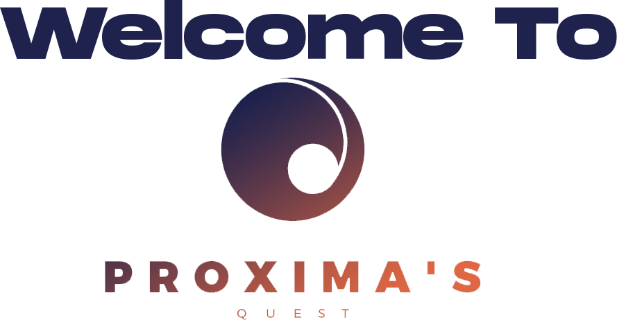

Histoire de Proxima's Quest
Proxima’s Quest est un jeu de rôle de type action-RPG. Le joueur incarne un humain et évolue dans un monde médiéval-fantastique en vue troisième personne. Ce monde est constitué de plusieurs royaumes, chacun gouverné par un dirigeant. La population vit sous le joug de ce gouvernement et des forces maléfiques qui imprègnent leurs mondes. Le joueur atterrit dans un cachot en présence d’un autre détenu qui fera office de premier PNJ et permettra aux joueurs de démarrer l’histoire. Il lui expliquera les bases du jeu ainsi que sa quête. Le joueur découvrira le reste de l’histoire au fur et à mesure de son expérience de jeu, à force d’interactions avec d’autres PNJ ou de découvertes de nouveaux items. Il devra parcourir plusieurs niveau et battre les boss finaux de chacun d’entre eux pour arriver au bout du jeu. Chaque niveaux étant constitué de plusieurs types d’adversaires que cela soit de simples démons ou encore des humains possédés. Par volonté, l’histoire sera assez brumeuse au départ, et le joueur devra comprendre beaucoup de choses par lui-même. Ce qui laissera aussi la place à une interprétation du joueur et une expérience totalement unique et personnelle. Le joueur aura plusieurs moyens d’avancer, que cela soit en augmentant ses capacités grâce à une barre d’expérience, avec l’obtention d’items éparpillés dans les mondes ou encore en interagissant avec les PNJS.
GodMELCorp
Godric BOUTELOUP

A mis 1 mois à envoyer ce site
Marco CHAN-WITZEL

8
Elias BOUARROUDJ

L'aigri de service.
Lucile PELOU

La décadence.